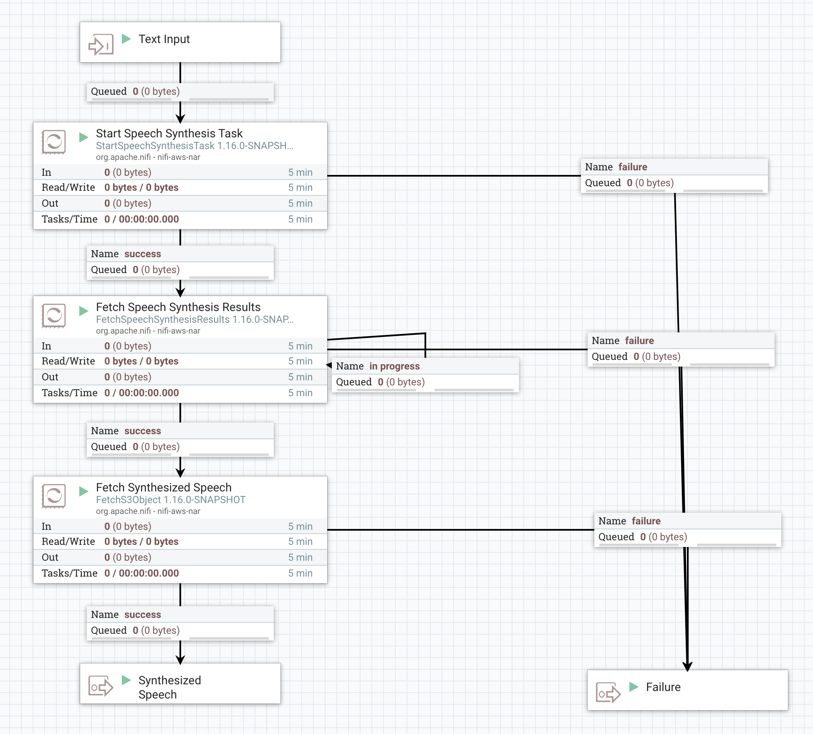

The AWS Polly service allows the user to synthesize speech from text. To accomplish this, we must provide the text to AWS and trigger the Polly service to synthesize the speech. This is accomplished by using the StartSpeechSynthesisTask processor. The speech synthesis is performed asynchronously and can take several seconds or more. As a result, the StartSpeechSynthesisTask does not provide any synthesized speech as its output. Rather, it transfers the original FlowFile along, after adding an attribute for the Task ID that can then be used to fetch the results via FetchSpeechSynthesisTask.
A typical dataflow for speech synthesis includes three key processors. First, the StartSpeechSynthesisTask is used to send the FlowFile contents as text to Amazon Polly. Next, the FetchSpeechSynthesisResults processor is used to fetch the results. If the results have not yet completed, the FlowFile will be transferred to the "in progress" relationship. As a result, the "in progress" relationship is typically routed from FetchSpeechSynthesisResults back to the same FetchSpeechSynthesisResults processor so that it will retry until the task has completed. Once the speech synthesis task completes, the FetchSpeechSynthesisResults provides the output of the service as a JSON payload. It is important to note, however, that the output of the FetchSpeechSynthesisResults is NOT the synthesized speech. Rather, it is a JSON payload that provides several important details about the task. One of those details is the URI where the synthesized speech is stored (in S3). Additionally, the Output FlowFile contains attributes "s3.bucket", "filename", "s3.region" and "s3.version" that can be used by FetchS3Object to fetch the synthesized speech.
As a result, a typical dataflow that takes text as input and provides the synthesized speech as output may look like this:
